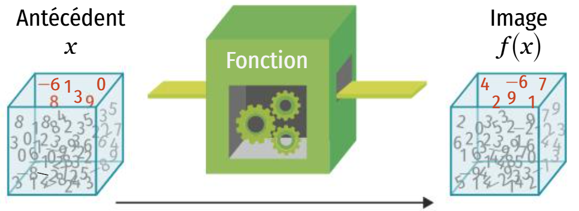
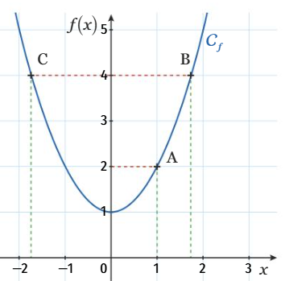
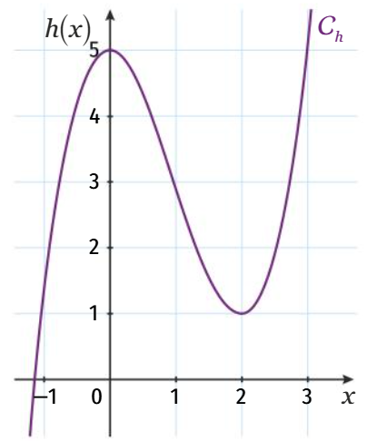
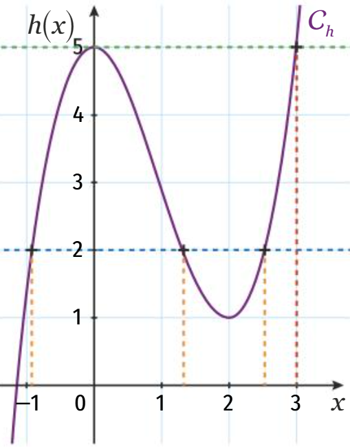
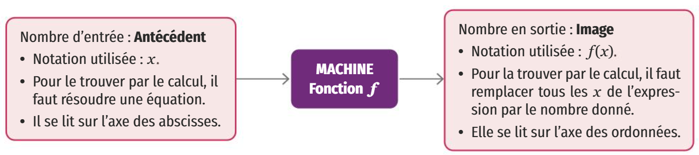
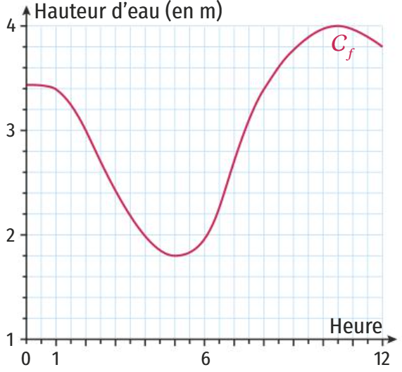
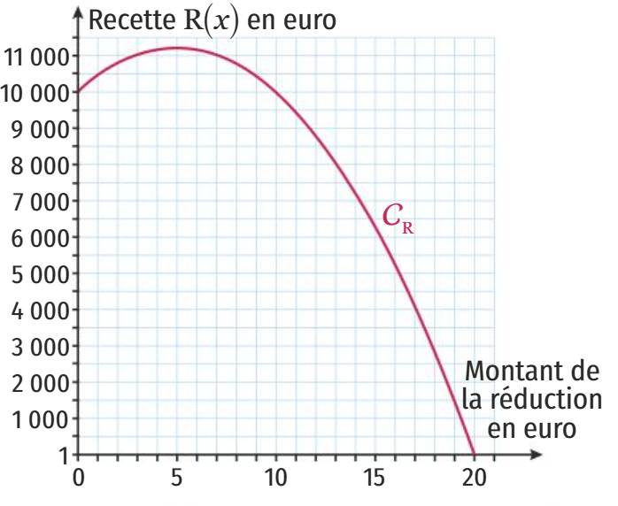
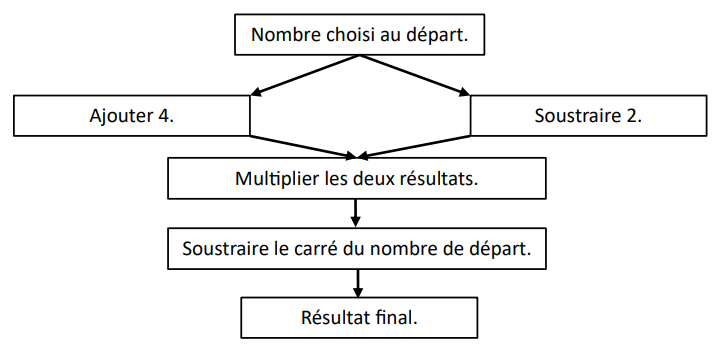
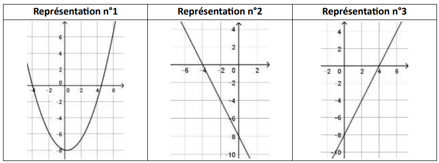
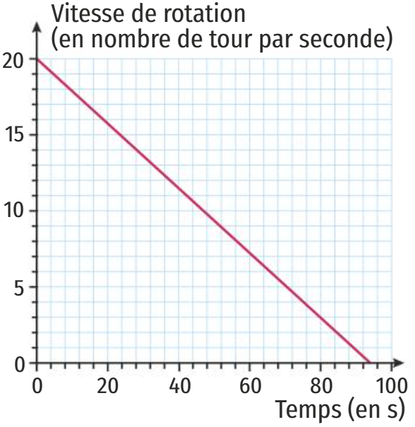

Le processus qui, à un nombre donné au départ, associe un unique autre nombre, s'appelle une fonction, souvent notée \( f \).
Le nombre de départ est noté \( x \) et s'appelle un antécédent.
Le nombre associé est noté \( f(x) \) (se lit « \( f \) de \( x \) ») et s'appelle l'image de \( x \) par \( f \).
💡 Remarque : Il ne faut pas confondre \( f \) et \( f(x) \). \( f \) désigne une fonction alors que \( f(x) \) désigne un nombre (l'image du nombre \( x \) par la fonction \( f \)).

Si l'on introduit 2 dans la machine, il sortira 4 puisque \(2^2 = 4\). On dit que 2 a pour image 4.
Si l'on a obtenu 49, on a pu introduire 7 ou \(-7\). On dit que 49 a deux antécédents : 7 et \(-7\).
Notation : \( c : x \mapsto x^2 \) ou \( c(x)=x^2 \).
Expression algébrique d'une fonction :
On peut noter : \( f : x \mapsto \ldots \) ou \( f(x) = \ldots \).
2. Représentation graphique d'une fonction
Toute fonction \( f \) peut être représentée par une courbe représentative notée \( \mathcal{C}_f \).
La courbe est l'ensemble des points de coordonnées \((x ; f(x))\).
L'antécédent \(x\) se lit sur l'axe des abscisses.
L'image \(f(x)\) sur l'axe des ordonnées.
Dans certains cas, les valeurs lues sont exactes (points sur quadrillage), mais le plus souvent il s'agit de valeurs approchées.
L'image de 1 par la fonction \( f \) est 2.
Le point A a pour coordonnées \((1 ; 2)\).
Un antécédent de 4 par \( f \) est environ 1,7 (valeur approchée).
4 a un deuxième antécédent : environ \(-1,7\).

3. Tableau de valeurs d'une fonction
Un tableau de valeurs d'une fonction \( f \) regroupe les coordonnées d'un certain nombre de points de sa courbe.
Tableau de valeurs pour une fonction \( g \) :
\[
\begin{array}{|c|c|c|c|c|c|c|}
\hline x & -1 & 0 & 2 & 4 & 6 & 8 \\ \hline g(x) & 2 & 3 & 5 & 4 & 2 & 0 \\ \hline
\end{array}
\]
L'image de 0 est 3.
Les antécédents de 2 sont \(-1\) et \(6\).
À retenir :
Une fonction associe à chaque antécédent une unique image.
On note \( f : x \mapsto f(x) \).
Graphiquement, la courbe est l'ensemble des points \((x ; f(x))\).
Un tableau donne des points particuliers.
4. Déterminer image et antécédent
A - Par calcul algébrique
📐 Calculer l'image d'un nombre : remplacer \(x\) par le nombre dans \(f(x)\). 🔍 Trouver un antécédent : résoudre l'équation \(f(x) = b\).
Exercice : Soit \(f(x)=x^2+5x\). Image de 4 : \(f(4)=16+20=36\).
Antécédent de 7 par \(f(x)=2x-9\) : \(2x-9=7 \Rightarrow 2x=16 \Rightarrow x=8\).
B - Par lecture graphique
Image de \(a\) : placer \(a\) sur les abscisses, rejoindre verticalement la courbe, lire l'ordonnée.
Antécédent(s) de \(b\) : placer \(b\) sur les ordonnées, tracer une horizontale, lire les abscisses des intersections.
📖 Exercice graphique (fonction \(h\)) :
1) Déterminer l'image de 3 par \(h\).
2) Déterminer les antécédents de 2 par \(h\).
Solutions :
✔ Image de 3 : 5.
✔ Antécédents de 2 : environ \(-0,9\) ; \(1,3\) ; \(2,5\).

Méthode pas à pas (tracés) :
1) Sur l’axe des abscisses, on se place au nombre dont on cherche l’image (ici 3).
On trace la droite verticale (rouge).
L’ordonnée du point de la courbe donne l’image (ici 5) (tracé vert).
2) Sur l’axe des ordonnées, on se place au nombre dont on cherche les antécédents (ici 2).
On trace la droite horizontale (bleue).
Les abscisses des points d’intersection (orange) sont les antécédents.
Antécédents de 2 : environ \(-0,9\) ; \(1,3\) et \(2,5\).

Attention : Une image est toujours unique.
Un nombre peut avoir 0, 1 ou plusieurs antécédents.
En lecture graphique, les valeurs sont souvent approchées.
À retenir pour cette section : Image par calcul : remplacer \(x\) par la valeur donnée.
Antécédent par calcul : résoudre \(f(x) = valeur\).
Image graphique : vertical → courbe → ordonnée.
Antécédent graphique : horizontal → courbe → abscisse(s).

🔄 Les questions changent à chaque nouvelle tentative — entraîne-toi autant que tu veux ! | Tentative 1
🏝️ Exercice 1 : Hauteur de la mer (Fort-de-France)
Julien dispose de 15 jours de vacances. Il contacte l'agence de voyages « À LA VOILE » pour préparer une croisière en voilier au départ de Fort-de-France. Le départ de la croisière choisie par Julien a lieu le 10 juillet (entre 0 h et 12 h). On a représenté ci-dessous la courbe représentative de la fonction \(f\) qui, à l'heure de la matinée (entre 0 h et 12 h) du 10 juillet, associe la hauteur de la mer dans le port de Fort-de-France.

Le voilier ne peut sortir du port que si la hauteur d'eau dépasse 3,20 mètres. Quelles sont les tranches horaires de départ possibles pour ce voilier ?
Le skipper du voilier décide de partir lorsque la hauteur d'eau est maximale. À quelle heure Julien va-t-il partir ?
Donner l'image de 2 par la fonction \(f\). Interpréter le résultat.
Donner le (ou les) antécédent(s) de 2 par la fonction \(f\). Interpréter le résultat.
✔️ Il pourra sortir à partir d'environ 1h30 jusqu'à environ 7h40.
✔️ Julien partira à 10h30.
✔️ L'image de 2 par la fonction est 3. Interprétation : f(2)=3 signifie qu'à 2h du matin, la hauteur de l'eau est de 3 m.
✔️ Les antécédents de 2 par rapport à la fonction sont 4 et 6h05. Interprétation : la hauteur de l'eau est de 2m à 4h et à 6h05 du matin.
🎭 Exercice 2 : Réduction et recette (d'après Brevet Amérique du Nord 2011)
Le directeur d'un théâtre sait qu'il accueille environ 500 spectateurs quand le prix d'une place est de 20 euros. Il a constaté que chaque réduction de 1 euro du prix d'une place attire 50 spectateurs de plus. Le directeur de la salle souhaite déterminer le prix d'une place lui assurant la meilleure recette. On note \(R\) la fonction donnant la recette (en €) en fonction du montant \(x\) de la réduction (en €).
Compléter le tableau suivant (les cases grisées sont déjà remplies).
Réduction (€)
Prix de la place (€)
Nombre de spectateurs
Recette (€)
0
20
500
10 000
1
19
600
16
On donne ci-après la courbe représentative de la fonction \(R\). Par lecture graphique, répondre aux questions suivantes.

Quelle est la recette pour une réduction de 5 € ?
Quel est le montant de la réduction pour une recette de 4 050 € ? Quel est alors le prix d'une place ?
Quelle est l'image de 8 par la fonction \(R\) ? Interpréter ce résultat pour le problème.
Quelle est la recette maximale ? Quel est alors le prix de la place ?
✔️ Pour une réduction de 5 €, la recette est d'environ 11 200 € (valeur lue sur le graphique).
✔️ Pour une recette de 4 050 €, on lit un montant de réduction de 17 € environ. Le prix d'une place est alors 20 - 17 = 3 €.
✔️ L'image de 8 par la fonction R est environ 4 050 €. Pour un montant de réduction de 8 €, on obtient une recette de 4 050 €.
✔️ La recette maximale est d'environ 11 200 € et le prix de la place correspondant est 20 - 5 = 15 €.
🧮 Exercice 3 : Programme de calcul (Brevet Polynésie 2025)
On considère le programme de calcul suivant :

Montrer que si on choisit 5 comme nombre de départ, le résultat du programme est 2.
On choisit \(x\) comme nombre de départ.
Parmi les expressions suivantes, quelle est celle qui permet d'exprimer le résultat de ce programme de calcul en fonction de \(x\) ? (Aucune justification n'est attendue) A) \(x+4\times x-2-x^2\) B) \(x+4\times x-2-2x\) C) \((x+4)(x-2)-x^2\) D) \((x+4)(x-2)-2x\)
Montrer que le résultat du programme peut s'écrire sous la forme \(2x-8\).
On appelle \(f\) la fonction définie par \(f(x)=2x-8\). Voici trois représentations graphiques :

La représentation graphique de \(f\) est la n°3. Expliquer pourquoi les n°1 et n°2 ne conviennent pas.
Déterminer l'image de 4 par la fonction \(f\).
Quel nombre de départ faut-il choisir pour que le résultat du programme soit égal à 100 ?
✔️ \(f(x)=2x-8\) est affine croissante (pente 2) et coupe l'axe des ordonnées en -8. Le n°1 est horizontal (fonction constante), n°2 est décroissant (pente négative).
Le hand-spinner est une sorte de toupie plate qui tourne sur elle-même. On donne au hand-spinner une vitesse de rotation initiale au temps \(t=0\). Puis, au cours du temps, sa vitesse de rotation diminue jusqu'à l'arrêt complet. Sa vitesse est alors égale à 0. Grâce à un appareil de mesure, on a relevé la vitesse de rotation exprimée en nombre de tours par seconde.

Le temps et la vitesse de rotation du hand-spinner sont-ils proportionnels ? Justifier.
Par lecture graphique, répondre aux questions suivantes :
Quelle est la vitesse de rotation initiale (en tours par seconde) ?
Quelle est la vitesse au bout d'une minute et vingt secondes ?
Au bout de combien de temps le hand-spinner va-t-il s'arrêter ?
Pour calculer la vitesse de rotation \(V(t)\) en fonction du temps \(t\) (en secondes), on utilise la formule \(V(t) = -0,214 \times t + V_{\text{initiale}}\), où \(V_{\text{initiale}}\) est la vitesse de rotation initiale.
On lance le hand-spinner à une vitesse initiale de 20 tours par seconde. Calculer sa vitesse au bout de 30 secondes.
Au bout de combien de temps s'arrêtera-t-il ? Justifier par un calcul.
Est-il vrai que, d'une manière générale, si l'on fait tourner le hand-spinner deux fois plus vite au départ, il tournera deux fois plus longtemps ? Justifier.
✔️ Non, car la fonction est affine (\(V(t)= -0,214 t + V_0\)) et ne passe pas par l'origine. Pas de proportionnalité.